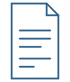

Track 1 — The Annual Water Loss Report Card
Every year, we grade water utilities across the country on how much water they lose, benchmarked against similar utilities.
See Utility GradesAnnual Water Loss Report Card
Project Watershed makes it public.
Project Watershed is the student movement holding America's water utilities accountable.
The Scale
2,100,000,000,000
Two point one trillion gallons of clean, treated water leak from America's pipes every year, enough to supply every household in the country for months. And almost nobody is talking about it.
The Work

Every year, we grade water utilities across the country on how much water they lose, benchmarked against similar utilities.
See Utility GradesA public utility lookup tool, a student chapter network, and a media strategy that puts each grade in front of the people who can act on it.
Get InvolvedThe Name
A watershed is the land that drains into a single river, lake, or reservoir. Every drop that falls in it ends up in the same place. It's a real term from water science, and it signals we know this space.
A "watershed moment" is a turning point, the moment before and after which everything is different. That's the claim we're making: we want to be the turning point in how America thinks about water loss.
A watershed is about what flows through a system and where it ends up. Our mission is about the water that enters the system and never reaches its destination. The name is the question we're asking: what happens between the source and the tap?
We're making sure no utility can hide from it.
Adopt one utility. Run one grade. Make one presentation.
Start a Chapter